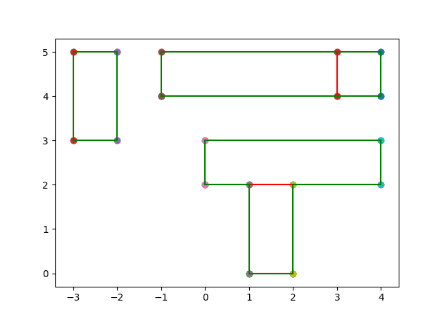

Input 10
5
1 0
2 2
0 2
4 3
3 4
4 5
-1 4
3 5
-3 3
-2 5
Output 10
Measure = 13
Number of Contour Lines = 16
Contour Line Segments:-
1 0 2 0
2 2 4 2
0 2 1 2
-3 3 -2 3
0 3 4 3
-1 4 4 4
-1 5 4 5
-3 5 -2 5
-3 3 -3 5
-2 3 -2 5
-1 4 -1 5
0 2 0 3
1 0 1 2
2 0 2 2
4 2 4 3
4 4 4 5
Contour Length = 32
